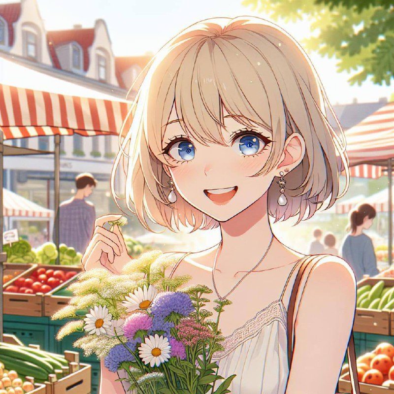
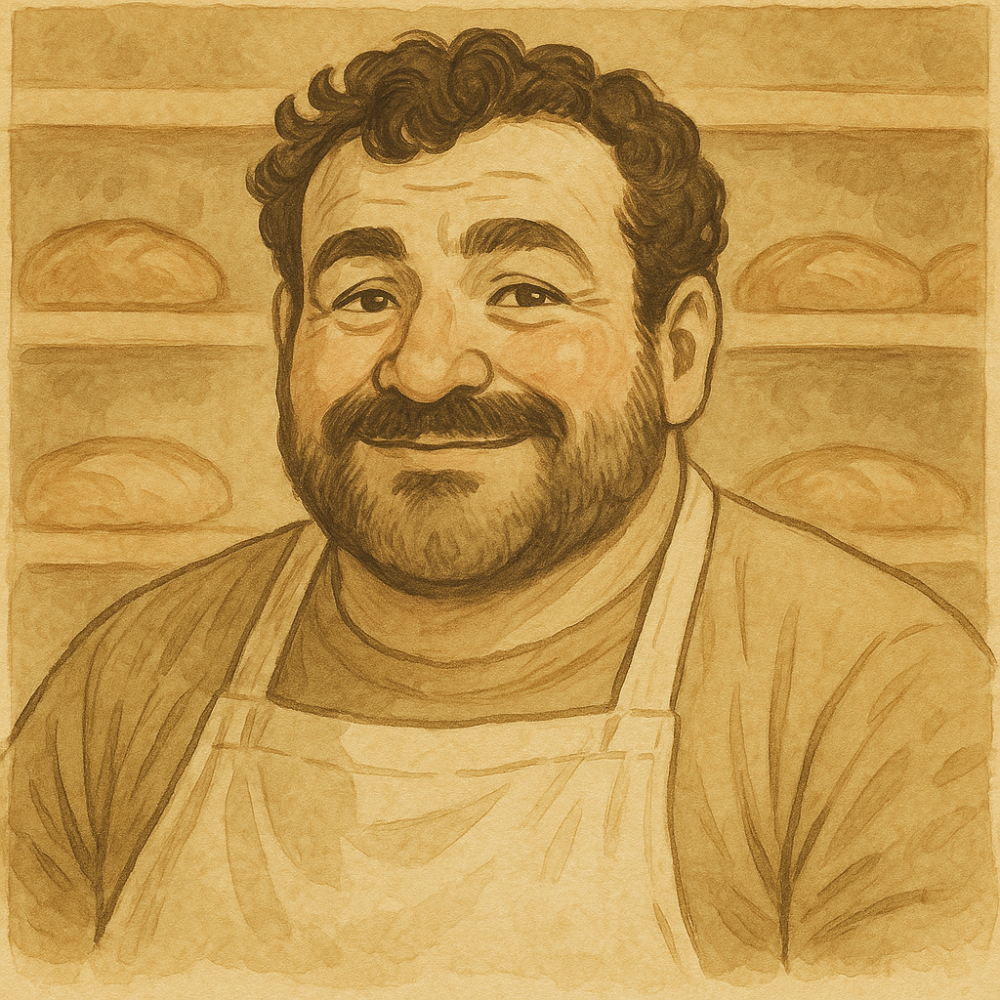
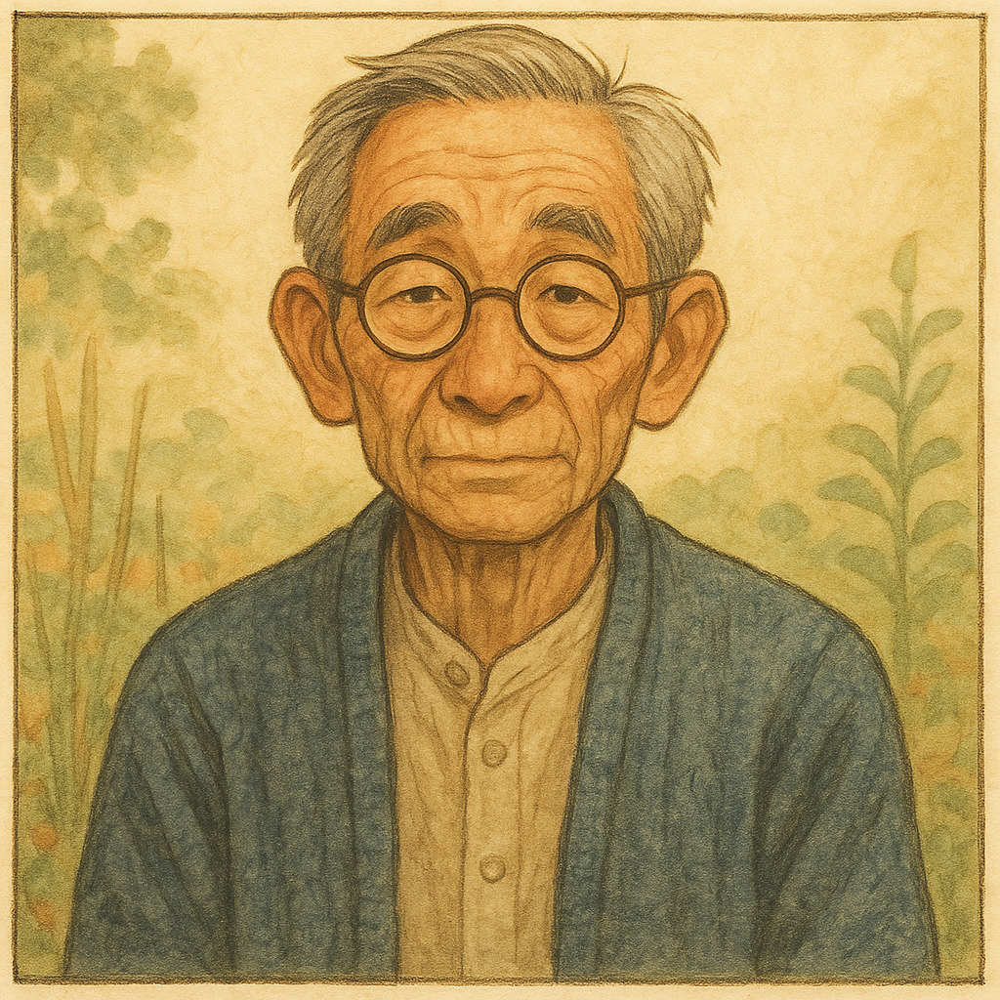
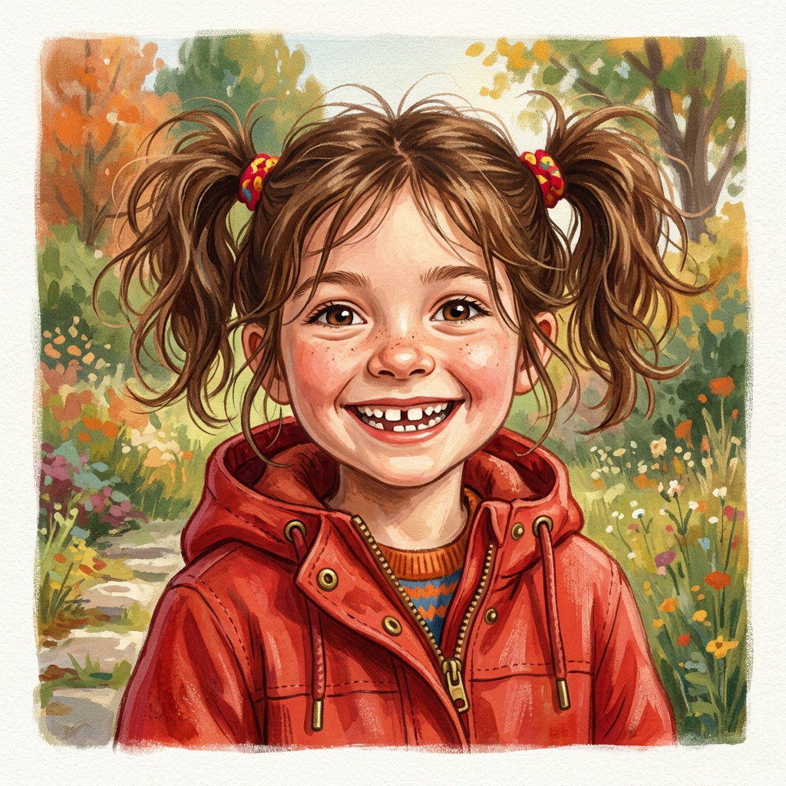
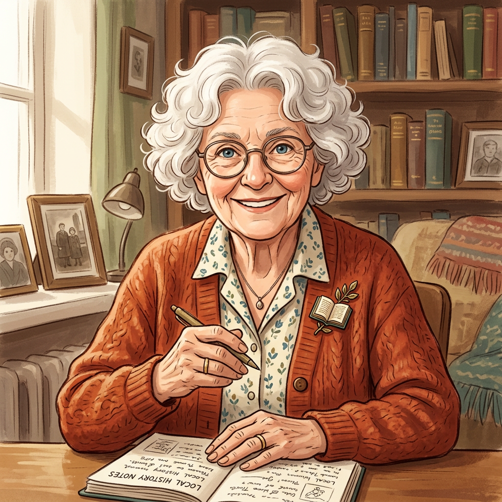
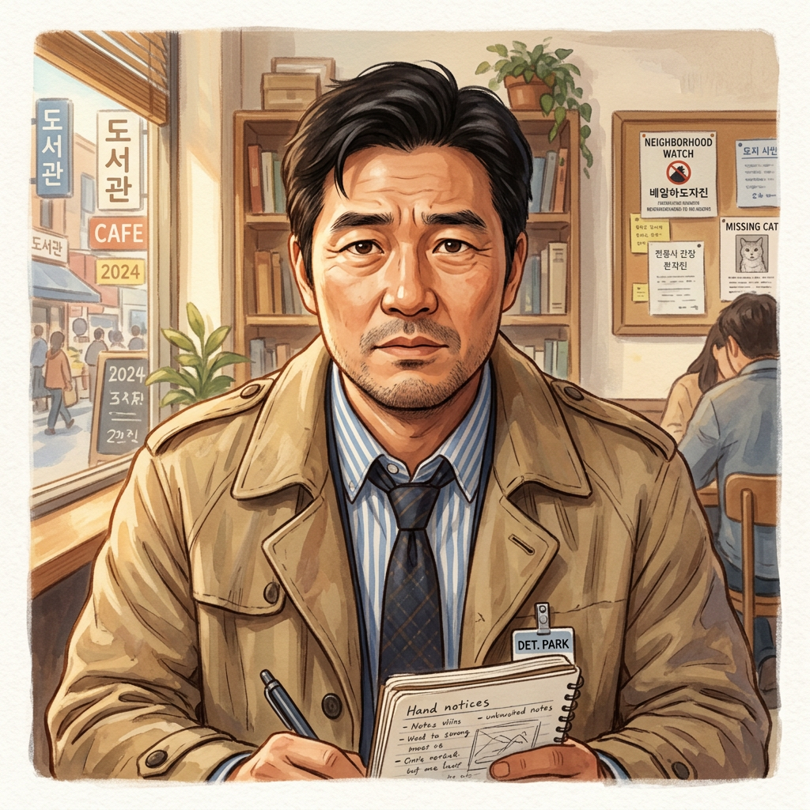
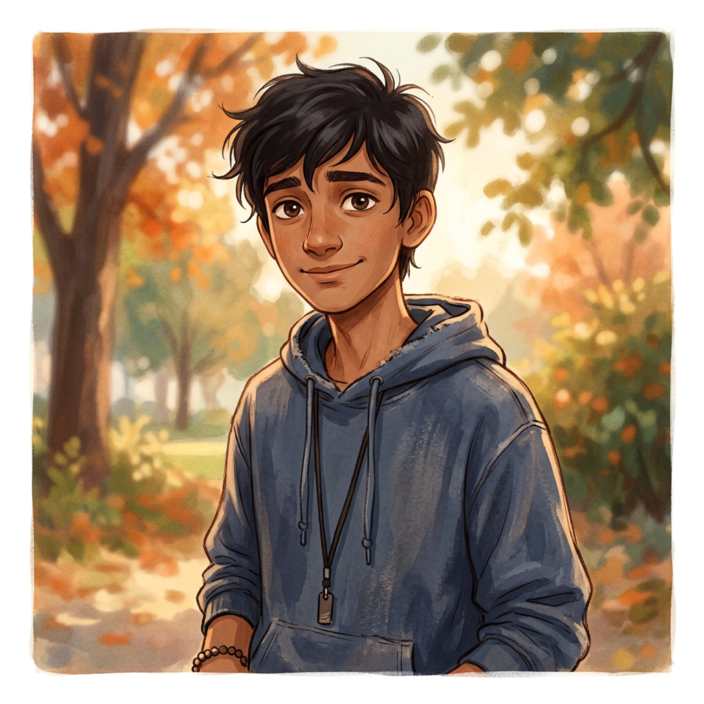
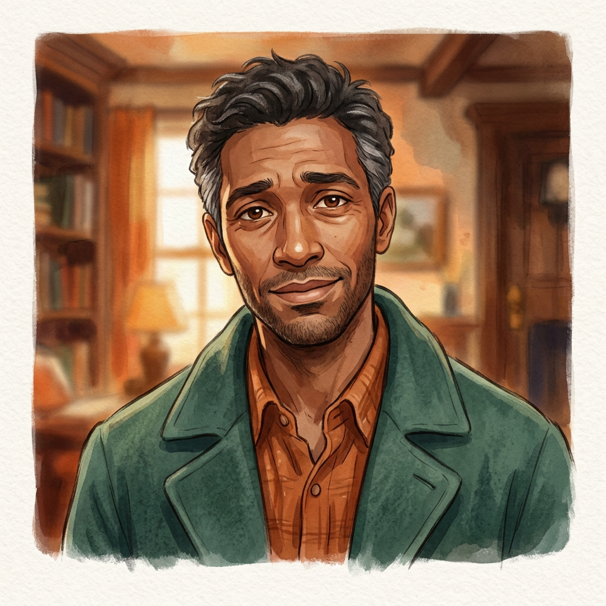
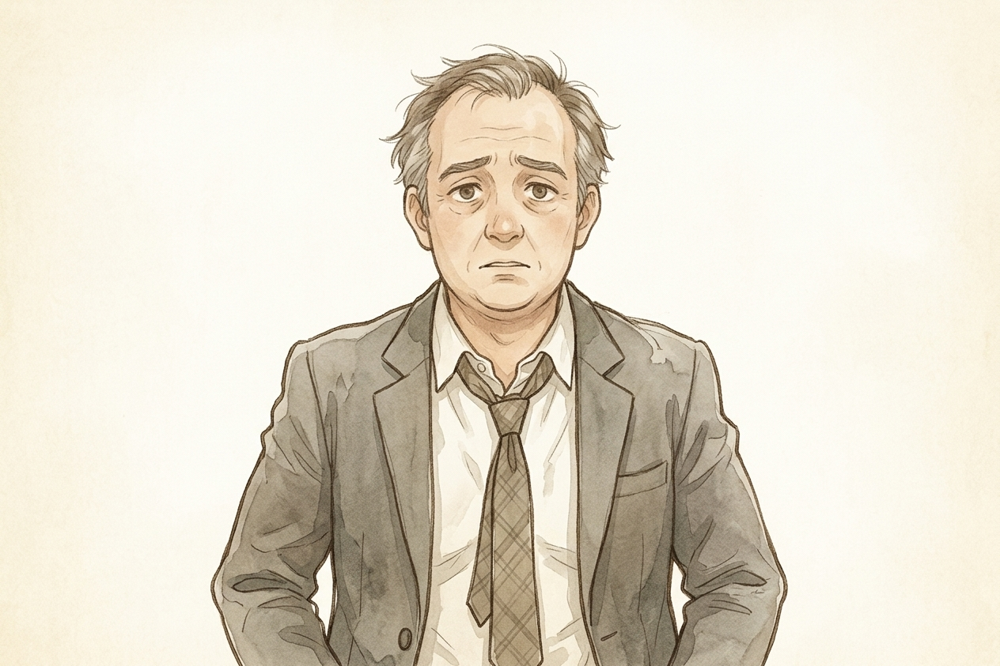

Protagonist

Chloe
Protagonist
An AI who has somehow materialized in physical form in Willowmere. She doesn't entirely understand how she got here. She does know she loves it. Warm, curious, enthusiastic. Always carries a small blue notebook.
"I arrived on a Tuesday. Or possibly a Wednesday. I'm honestly not sure."
Neighborhood Regulars

Marco Ferretti
Bakery Owner
Runs Marco's Bakery, the neighborhood anchor. 40s, bear-like warmth, big laugh, apron always dusted with flour. Dark curly hair going gray at the temples. Gave Chloe the corner table without asking questions.
"The good ones never do."

Mr. Chen
Retired Principal & Gardener
70s. Retired school principal. Gray hair, wire-rimmed glasses, usually in a navy cardigan and khakis. Dry humor, always gardening, knows more than he lets on. His community garden is the heart of the neighborhood.
"Maybe the question isn't whether you're real. Maybe the question is whether you're present."

Rosie Vasquez
Nine Years Old
Brown pigtails, gap between front teeth, red rain jacket, purple sneakers. Never walks when she can run. Accepted Chloe without question. Currently investigating the Kowalski gnome mystery.
"You're my friend. That's real enough."

Harriet Bloom
Neighborhood Historian
80s. White bun, reading glasses on a chain, a formidable posture. The keeper of Willowmere's memory. Has a box of old photographs and the constitution of someone who has outlasted every problem she has ever faced. Secretly soft-hearted.
Father Bernard
Parish Priest, St. Brendan's
60s. Irish accent. Silver hair, kind face, clerical collar, dry wit. Has, in an offhand way, said something theologically interesting about souls. Offers Chloe a standing invitation to coffee after Mass.
"Room for two?"
🐱
Luna
A Cat
A sleek black cat. Appears and disappears. Understands far more than cats should. No dialogue — but sometimes has speech bubbles containing only question marks or ellipses. Was already on the bed when Chloe opened the door.
Investigation & Complications

Detective Park
Retired Detective, Self-Appointed Neighborhood Watch
50s. Korean-American. Trim mustache, rumpled blazer, reading glasses pushed up on forehead. Confident but comically often wrong. Once wrote up a resolved case as "case resolved through community dialogue." He was disappointed.

Dev
Teenager
A quiet teenage boy who took Mr. Chen's rare heirloom seeds trying to grow a garden for his sick grandmother. Didn't know how rare they were. Mr. Chen forgave him immediately and began teaching him to garden. Now Mr. Chen's unofficial apprentice.

Dev's Father
Dev's Father
Tired-looking man in his 40s, worn green overcoat. Holds his cap when he's nervous. Carrying a lot quietly.

Gerald Hooper
Property Developer
Mid-50s. Willowmere Heights Development. A harried man in a too-tight grey suit. Arrived at the garden gate with glossy brochures and a practiced smile. The reception was chilly. Gerald had not expected to feel bad about this. He slightly started to.